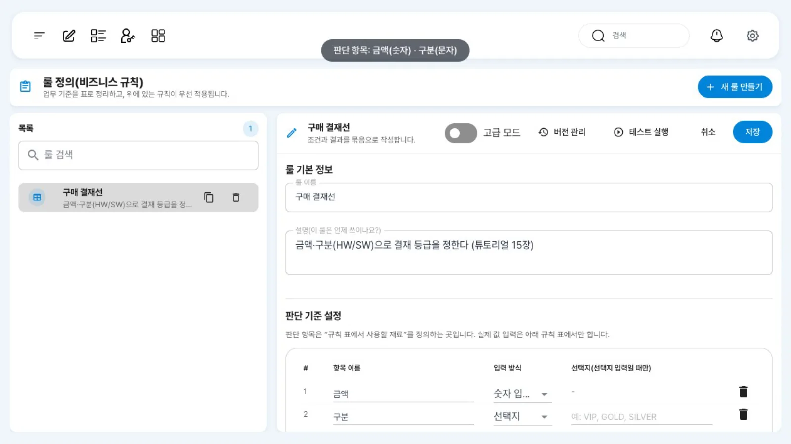
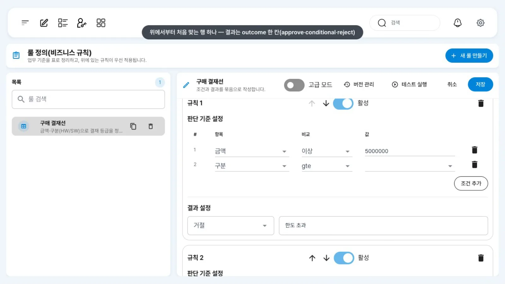
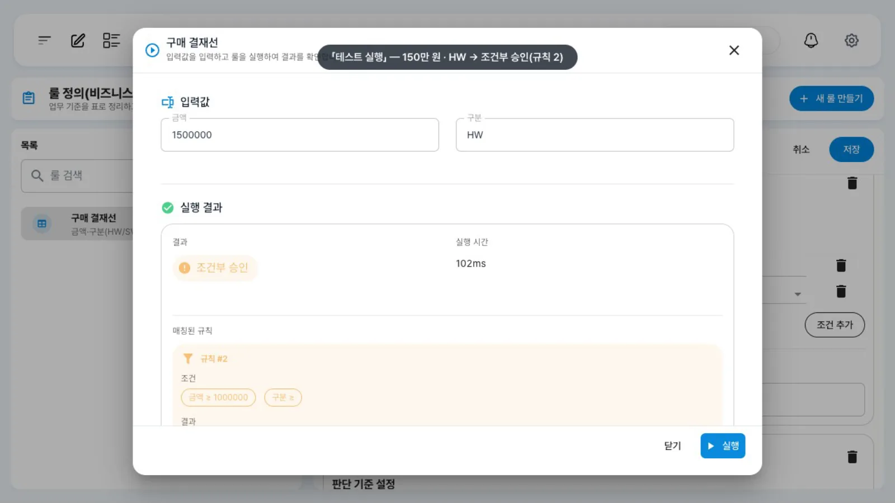
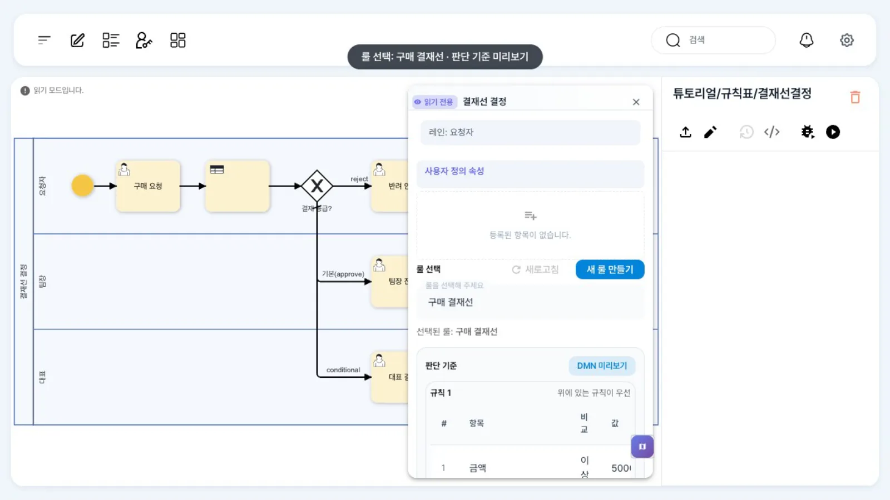
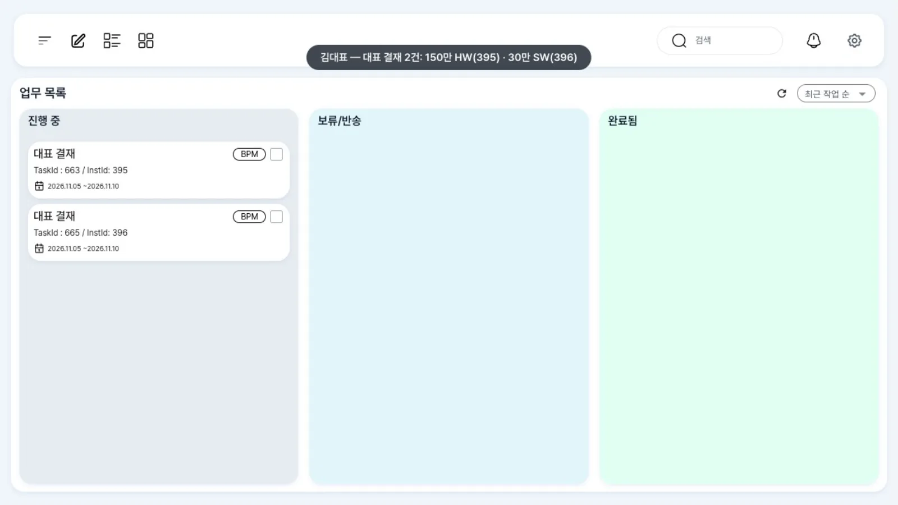

금액과 구분(HW/SW)으로 결재 등급을 정하는 결정표 「구매 결재선」을 둡니다. 규칙 작업이 결과를 변수
결재등급에 넣으면 게이트웨이가 대표 결재·팀장 전결·반려 안내로 나눕니다. 이 브랜치의 규칙표 결과는outcome한 칸뿐입니다.
무엇을 · 왜#
조건이 서너 개를 넘으면 게이트웨이 흐름마다 조건을 다는 방식은 읽기도 고치기도 어렵습니다. 결정표(DMN decision table)는 조건을 행과 열로 모아 둔 표입니다. 업무 담당자가 표만 고치면 프로세스를 다시 배포하지 않아도 결재선이 바뀝니다.
uEngine6에서는 세 가지 요소가 함께 동작합니다.
| 무엇 | 어디 | 하는 일 |
|---|---|---|
| 규칙(결정표) | 「룰 정의(비즈니스 규칙)」 화면 /business-rule → 파일 definitions/businessRules/<id>.rule |
입력 열(판단 항목)·규칙 행·결과 |
| 규칙 작업 | BPMN <bpmn:businessRuleTask>, _type org.uengine.kernel.bpmn.BusinessRuleTask |
프로세스 변수를 규칙 입력으로 넣고 결과를 변수로 받음 |
| 게이트웨이 | 결과 변수(결재등급)로 분기 |
배타 게이트웨이와 같음 |
Camunda DMN 엔진(camunda-engine-dmn)이 규칙을 평가합니다. 규칙 편집기가 저장하는 표는 DMN 1.3 XML이고, 적중 정책은 FIRST(위에서부터 처음 맞는 행 하나)입니다.
결과는 outcome 한 칸
- 결과 열은
outcome(문자열) 하나입니다. 편집기에서 값은 정해진 목록(approve·conditional·reject·PURCHASE·COLLECTION)에서 고릅니다. - 행마다 적는 「메모」는 DMN의 annotation이므로 결과로 돌아오지 않습니다(
note는 늘null). 메모를 변수로 매핑해도 값은 비어 있습니다. - 결과를 여러 칸 돌려받는 기능(main 브랜치의 multiple DMN outputs)은 이 브랜치에 없습니다.
이 장의 규칙 「구매 결재선」은 다음과 같습니다.
| # | 금액 | 구분 | outcome | 메모 |
|---|---|---|---|---|
| 1 | >= 5000000 |
- | reject |
한도 초과 |
| 2 | >= 1000000 |
- | conditional |
대표 결재 |
| 3 | - | "SW" |
conditional |
소프트웨어는 대표 결재 |
| 4 | < 1000000 |
- | approve |
팀장 전결 |
-는 「아무 값이나」입니다. 30만 원 소프트웨어는 3행의 조건에 먼저 맞으므로 conditional입니다.
따라 하기#
- 규칙 열기. 홍길동으로 왼쪽 메뉴에서 「룰 정의(비즈니스 규칙)」를 엽니다. 목록에서 「구매 결재선」을 고르면 오른쪽에 편집기가 열립니다.

규칙 목록과 편집기 - 판단 항목과 규칙 행. 「판단 기준 설정」에 항목
금액(입력 방식 「숫자 입력」)과구분(「선택지」)이 있습니다. 그 아래 「규칙」에 규칙 1~4가 위 표의 순서로 있고, 행마다 「판단 기준 설정」(항목·비교·값)과 「결과 설정」(거절·조건부 승인·승인)이 보입니다. 새 규칙은 오른쪽 위 「새 룰 만들기」에서 판단 항목 → 규칙(조건·결과) 순서로 만들고 「저장」합니다.
규칙 행 - 시험해 보기. 「테스트 실행」을 누르면 대화상자에 「입력값」 칸(금액·구분)이 나옵니다. 금액
1500000, 구분HW를 넣고 「실행」하면 「실행 결과」에 결과 「조건부 승인」과 「매칭된 규칙」(규칙 #2)이 나옵니다. API로도 같은 테스트를 할 수 있습니다(POST /business-rules/{id}/execute, 아래 레퍼런스).
테스트 실행 결과 - 규칙 작업 보기.
튜토리얼/규칙표/결재선결정을 열고 「결재선 결정」을 더블클릭합니다. 「룰 선택」에 「구매 결재선」, 「판단 기준」에 규칙별 표가 미리 보입니다. 아래 「데이터 매핑」에서금액·구분을 규칙 입력으로,outcome을 변수결재등급으로 연결합니다.
규칙 작업 패널 - 분기 조건. 게이트웨이 「결재 등급?」에서 나가는 흐름은
결재등급 == conditional→ 대표 결재,결재등급 == reject→ 반려 안내, 기본 흐름 → 팀장 전결입니다. - 네 건 실행. 최구매가 네 건을 요청합니다(이 장에서는 API로 「구매 요청」까지 진행). 30만 원 HW · 150만 원 HW · 30만 원 SW · 700만 원 HW.
- 결과 확인. 김대표의 업무 목록에 「대표 결재」 두 건(150만 HW, 30만 SW), 윤팀장에게 「팀장 전결」(30만 HW), 최구매에게 「반려 안내」(700만)가 옵니다. 관리자 상세의 변수
결재등급으로도 확인합니다.
김대표의 대표 결재 두 건
설정 레퍼런스#
규칙 파일(definitions/businessRules/<id>.rule)#
편집기가 저장하는 형식입니다. ruleJson.dmnXml에 DMN XML이 문자열로 들어갑니다.
{"id": "<uuid>", "name": "구매 결재선", "description": "…",
"ruleJson": {"dmnXml": "<?xml …?><definitions xmlns=\"https://www.omg.org/spec/DMN/20191111/MODEL/\" …>…</definitions>"}}
<decision id="decision_purchase_approval_line" name="구매 결재선">
<decisionTable id="decision_table_purchase_approval_line" hitPolicy="FIRST">
<input id="input_1" label="금액"><inputExpression typeRef="number"><text>금액</text></inputExpression></input>
<input id="input_2" label="구분"><inputExpression typeRef="string"><text>구분</text></inputExpression></input>
<output id="output_1" label="Outcome" name="outcome" typeRef="string" />
<annotation id="annotation_1" name="Note" />
<rule id="rule_1">
<inputEntry><text>>= 5000000</text></inputEntry><inputEntry><text>-</text></inputEntry>
<outputEntry><text>"reject"</text></outputEntry>
<annotationEntry><text>한도 초과</text></annotationEntry>
</rule>
<!-- rule_2 >= 1000000 → "conditional", rule_3 - / "SW" → "conditional", rule_4 < 1000000 → "approve" -->
</decisionTable>
</decision>
규칙 API#
| 호출 | 하는 일 |
|---|---|
GET /business-rules |
목록 |
POST /business-rules {name, description, ruleJson:{dmnXml}} |
만들기(응답의 id가 규칙 id) |
PUT /business-rules/{id} |
고치기 |
POST /business-rules/{id}/execute {"inputs":{"금액":1500000,"구분":"HW"}} |
시험 평가 → {"outcome":"conditional","note":null,"matchedRuleIndex":…,"executionTime":…} |
matchedRuleIndex는 문자열 조건 행에서 잘못된 번호를 반환할 때가 있어 결과 판단에 쓰지 마세요.
규칙 작업 JSON#
{"_type": "org.uengine.kernel.bpmn.BusinessRuleTask",
"businessRuleId": "<규칙 id>",
"eventSynchronization": {"eventType": "", "attributes": [], "mappingContext": {"mappingElements": [
{"argument": {"text": "[businessRule].<규칙키>.in_금액"}, "direction": "in", "variable": {"name": "금액"}},
{"argument": {"text": "[businessRule].<규칙키>.in_구분"}, "direction": "in", "variable": {"name": "구분"}},
{"argument": {"text": "결재등급"}, "direction": "out", "variable": {"name": "[businessRule].<규칙키>.out_outcome"}}]}}}
<규칙키>= 규칙 id에서 영숫자·한글이 아닌 글자를_로 바꾼 것. 숫자로 시작하면 앞에r_를 붙입니다(예:0686…-…→r_0686…_…).- 입력은
in_<판단 항목 이름>, 결과는out_outcome하나입니다. - 패널: 「룰 선택」 →
businessRuleId, 「데이터 매핑」 →mappingElements.
실행 결과(이 장을 촬영할 때의 실행)#
| 금액 | 구분 | /execute outcome |
변수 결재등급 |
간 곳 |
|---|---|---|---|---|
| 300,000 | HW | approve | approve | 팀장 전결(윤팀장) |
| 1,500,000 | HW | conditional | conditional | 대표 결재(김대표) |
| 300,000 | SW | conditional | conditional | 대표 결재(김대표) |
| 7,000,000 | HW | reject | reject | 반려 안내(최구매) |
흔한 실수#
| 증상 | 원인 | 고치는 법 |
|---|---|---|
결재메모 같은 변수가 늘 비어 있음 |
메모는 annotation, 결과가 아님 | 결과는 outcome 하나로 설계 |
| 규칙 작업 뒤 변수가 그대로 | 결과 매핑 방향이 반대 | argument = 변수 이름, variable = [businessRule].<키>.out_outcome, direction: out |
| 규칙을 고쳤는데 그대로 | 다른 규칙(id)을 고침 | 규칙 작업의 businessRuleId 확인 |
알려진 제약#
- 결과는
outcome하나, 값은 편집기의 고정 목록에서만 고릅니다. 메모는 결과로 나오지 않습니다. - 규칙 작업 패널의 「판단 기준」 미리보기에서
< 1000000의 연산자 칸이 비어 보이고, 편집기에서는 「아무 값이나」(-)인 칸이gte로 보입니다(표시 문제이며 평가는 정확함). - 「테스트 실행」의 「매칭된 규칙」과
/execute의matchedRuleIndex는 문자열 조건 행에서 잘못된 번호를 반환합니다. 30만 원 ·SW는 결과(조건부 승인)는 맞지만 매칭된 규칙이 3이 아니라 「규칙 #4」로 나옵니다. 결과만 믿으세요.
확인 문제#
30만 원짜리 소프트웨어는 왜 대표 결재로 가나요?
적중 정책이 FIRST이므로 위에서부터 조건에 처음 맞는 행의 결과를 반환합니다. 3행(구분 "SW" → conditional)이 4행(< 1000000 → approve)보다 위에 있어 먼저 선택됩니다.
대표 결재 기준을 200만 원으로 올리려면 무엇을 고치나요?
규칙표의 2행 조건을 >= 2000000, 4행을 < 2000000으로 고쳐 저장합니다. 프로세스 정의는 그대로 둡니다.
메모 「대표 결재」를 작업 제목에 쓰고 싶습니다. 규칙 결과로 받을 수 있나요?
이 브랜치에서는 받을 수 없습니다. 메모는 결과가 아닙니다. outcome 값을 받아 게이트웨이나 스크립트에서 문구로 바꾸세요.